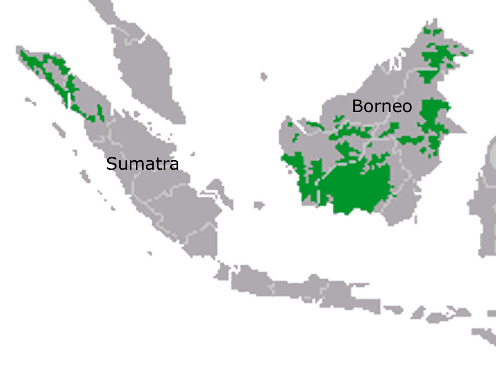

Borneo and Sumatera
The forests of Borneo and Sumatra are among the most biologically diverse habitats on Earth, possessing staggeringly high numbers of unique plants and animals.
WWF Projects
Thirty Hills
- WWF and partners secure protection for critical rain forest in Sumatra. Thirty Hills is one of the last places on Earth where elephants, tigers and orangutans coexist in the wild.
The Natural Capital Project
- The Natural Capital Project—a partnership among WWF, The Nature Conservancy, University of Minnesota and Stanford University—works to provide decision makers with reliable ways to assess the true value of the services that ecosystems provide.
|
 |